The cells of your body constantly send and receive signals. A signal is useless unless a cell has a receptor for it, and the receptor decides what happens next. This lecture gives the rules that every signalling pathway follows; the next lectures fill in the machinery.
After this lecture you can:
describe the signal types: endocrine, paracrine, autocrine, contact-dependent and synaptic;
name the receptor classes: ion-channel-coupled, G-protein-coupled, enzyme-coupled and intracellular (nuclear) receptors;
use Kd, dose–response curves, EC₅₀ and IC₅₀, and tell an agonist, a partial agonist and an antagonist apart;
explain amplification, integration, feedback and adaptation, and how molecular switches (phosphorylation, GTPases) work;
explain why some responses take seconds and others hours.
The question: one hormone, many answers
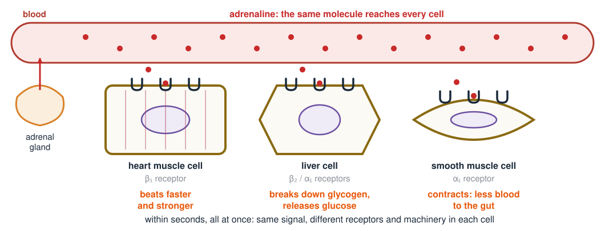
A fright: your adrenal glands release adrenaline into the blood. Within seconds the heart beats faster, the liver releases glucose and blood vessels in the gut contract.
Even in a fright, blood adrenaline reaches only a few nanomolar: about one molecule per 10 billion water molecules. How does a cell detect so little? Why does the same molecule do different things in different cells? And how can a drug block it?
Five ways to send a signal
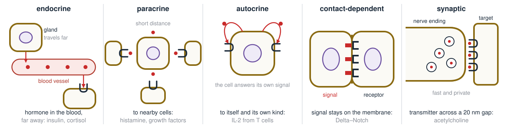
Endocrine: a hormone travels in the blood to cells all over the body (insulin, cortisol). Slow to spread, long reach.
Paracrine: a local mediator acts on nearby cells and is quickly destroyed or taken up (histamine, many growth factors).
Autocrine: a cell responds to its own signal; a group of similar cells can reinforce each other (IL-2 from activated T cells).
Contact-dependent: the signal stays on the membrane of the sending cell; only touching cells respond (Delta on one cell, Notch on the next).
Synaptic: a nerve cell releases a neurotransmitter across a narrow gap to one target cell (acetylcholine): fast and private.
Where is the receptor? On the surface or inside
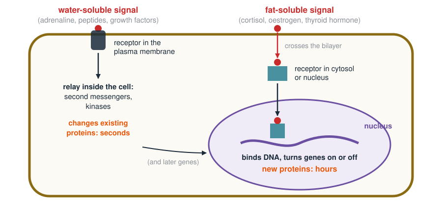
Water-soluble signals (most hormones, peptides, growth factors, neurotransmitters) cannot cross the lipid bilayer. Their receptors sit in the plasma membrane and pass the message inside.
Small fat-soluble signals (steroid hormones such as cortisol and oestrogen, thyroid hormone, vitamin D) diffuse through the membrane and bind intracellular receptors, which act as transcription factors.
Three classes of cell-surface receptor
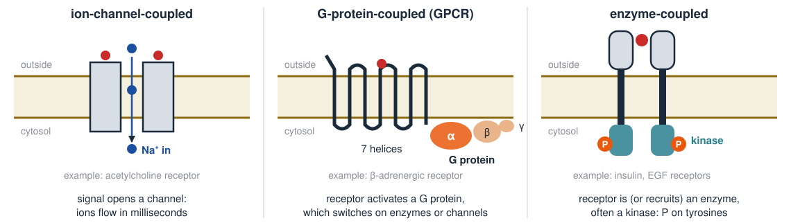
Ion-channel-coupled: the receptor is a channel; binding opens it. You met the acetylcholine receptor in the lecture on ion channels. Fastest: milliseconds.
G-protein-coupled receptors (GPCRs): seven helices cross the membrane; the active receptor switches on a G protein, which switches on enzymes or channels. Largest family: about 800 genes in humans.
Enzyme-coupled: a single-pass receptor that is itself an enzyme (often a tyrosine kinase) or recruits one. Binding brings two receptors together (insulin, growth factors).
Intracellular receptors: a hormone becomes a transcription factor
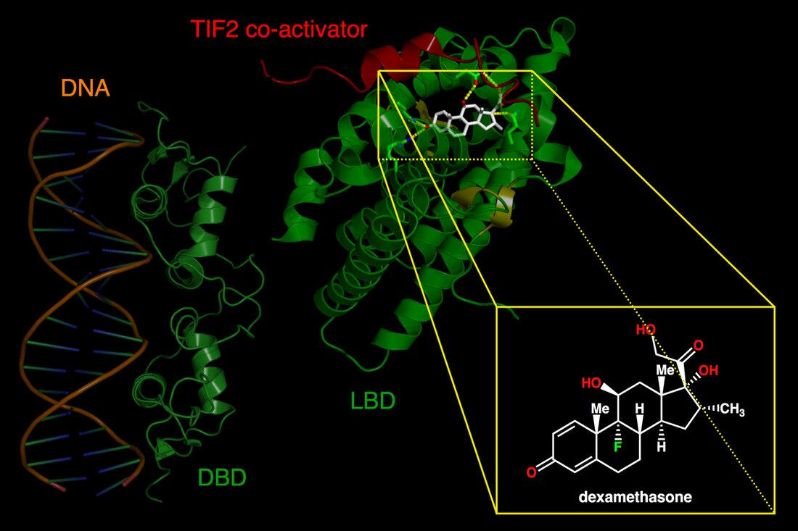
Glucocorticoid receptor (green) on DNA: DNA-binding domain (DBD) and ligand-binding domain (LBD) with the drug dexamethasone in its pocket and a co-activator (red). Crystal structures.
Nuclear receptors: about 48 in humans; receptors for steroids (cortisol, oestrogen, testosterone), thyroid hormone, vitamin D and retinoic acid.
Without hormone, some wait in the cytosol (the glucocorticoid receptor, held by chaperones), others sit on DNA in the nucleus.
The hormone binds a pocket in the ligand-binding domain; the receptor changes shape, binds DNA response elements and recruits co-activators: target genes switch on (or off).
Response in hours, lasting long after the hormone is gone. Drugs: prednisolone (anti-inflammatory), tamoxifen (breast cancer).
Recap: binding is an equilibrium; Kd measures affinity
Kd is the concentration that fills half the receptors. Low Kd = high affinity. Hormone receptors: Kd about 0.1–10 nM.
On a log axis the curve is an S: from 10 % to 90 % occupied takes an 81-fold rise in concentration.
How do we know? Counting receptors with a radioactive drug
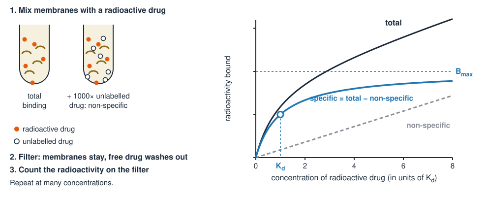
1970s: Robert Lefkowitz used radioactively labelled drugs to find the β-adrenergic receptor, then thought by many to be just an idea. Specific binding was saturable, tight and matched the drugs’ effects.
Specific binding = total − non-specific. Its curve gives Bmax (how many receptors) and Kd (how tightly they bind).
Nobel Prize in Chemistry 2012 (Lefkowitz and Kobilka, for GPCRs).
From binding to response: the dose–response curve
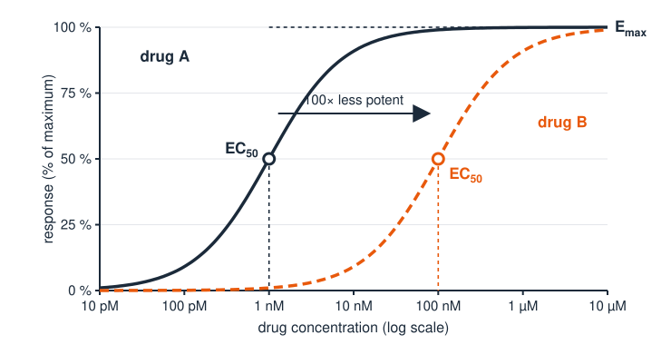
Measure a response (heart rate, cAMP, contraction) at many concentrations; plot it against log concentration.
Emax: the largest response the drug can give. EC₅₀: the concentration that gives half of Emax.
Potency = how little drug you need (a low EC₅₀). Drug A is 100× more potent than drug B, but both reach the same maximum.
Agonists, partial agonists and antagonists
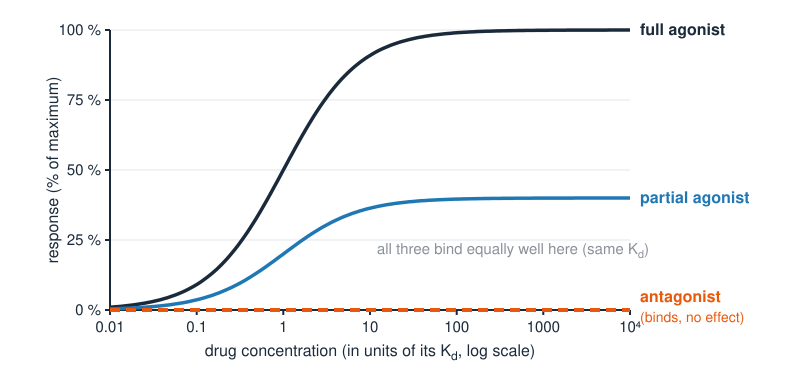
Binding (affinity) and switching the receptor on (efficacy) are two different properties.
Full agonist: binds and switches on fully (adrenaline, morphine). Partial agonist: binds but switches on only part-way, even at 100 % occupancy (buprenorphine). Antagonist: binds, switches nothing on, and blocks the site (naloxone, beta-blockers). Try it:Demo: dose–response.
Antagonists: shift or flatten; IC₅₀
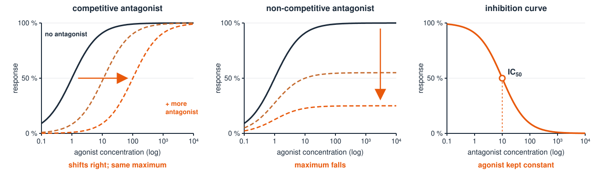
Competitive antagonist (same site, reversible): more agonist can out-compete it. The curve shifts right; Emax is unchanged.
Non-competitive antagonist (another site, or irreversible): more agonist cannot help. Emax falls.
IC₅₀: the antagonist concentration that removes half of the response, at a stated agonist concentration. More agonist → higher IC₅₀.
Amplification: a few receptors, a large response
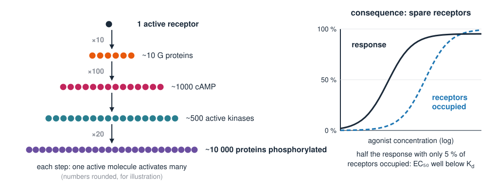
Each active molecule activates many of the next: an enzyme cascade. One adrenaline–receptor pair can lead to thousands of phosphorylated proteins.
Consequence: a full response may need only a few % of the receptors occupied. The rest are spare receptors, and EC₅₀ is lower than Kd.
Molecular switches: phosphorylation and GTPases
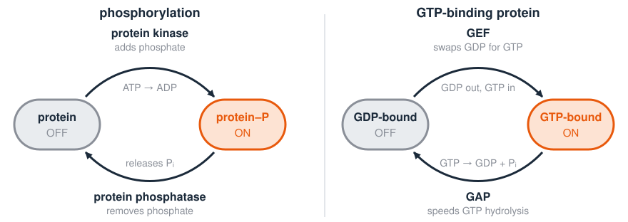
Phosphorylation: a kinase adds a phosphate from ATP to serine, threonine or tyrosine; a phosphatase removes it. About 500 kinases in the human genome.
GTP-binding proteins are ON with GTP and turn themselves OFF by hydrolysing it. A GEF switches them on; a GAP speeds up switching off. Examples: G proteins, Ras.
Every switch needs an off route. A switch that cannot turn off causes disease (Ras mutations in cancer, cholera toxin).
Integration and feedback: cells compute
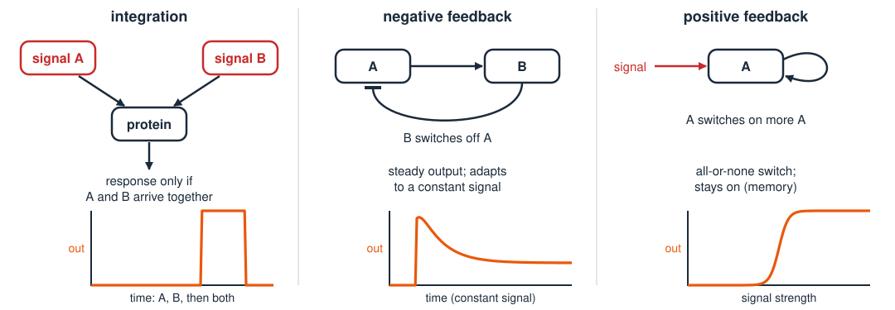
Integration: a cell receives many signals at once. Proteins that need two inputs act like an AND gate; the answer depends on the combination of signals.
Negative feedback: the output switches off its own cause. Keeps responses short or stable, and lets the cell adapt.
Positive feedback: the output reinforces itself. Makes all-or-none decisions that stay on (dividing, differentiating).
Adaptation: when the signal stays on
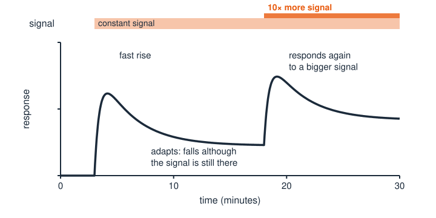
Under a constant signal, the response fades: the cell becomes less sensitive (desensitisation). A stronger signal gives a new response.
Ways to adapt: the active receptor is phosphorylated and blocked by arrestin (seconds to minutes); receptors are taken into the cell (minutes to hours) and degraded; downstream proteins adapt.
Seen in the clinic as tolerance: opioids need higher doses over time; frequent β₂-agonist inhaler use works less well.
Fast and slow responses
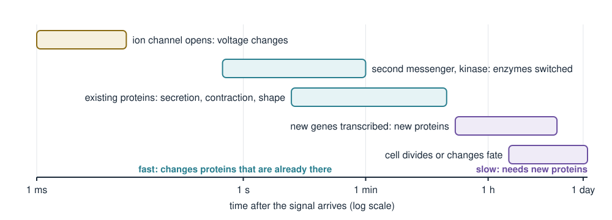
Fast (milliseconds to minutes): the signal changes proteins that are already there: opens channels, switches enzymes, starts secretion or contraction.
Slow (hours to days): the signal changes gene expression; new proteins must be made. This is how cells change what they are.
Many signals do both: adrenaline acts in seconds via enzymes, and later changes genes via the same pathway.
Why it matters: receptors are the main drug targets
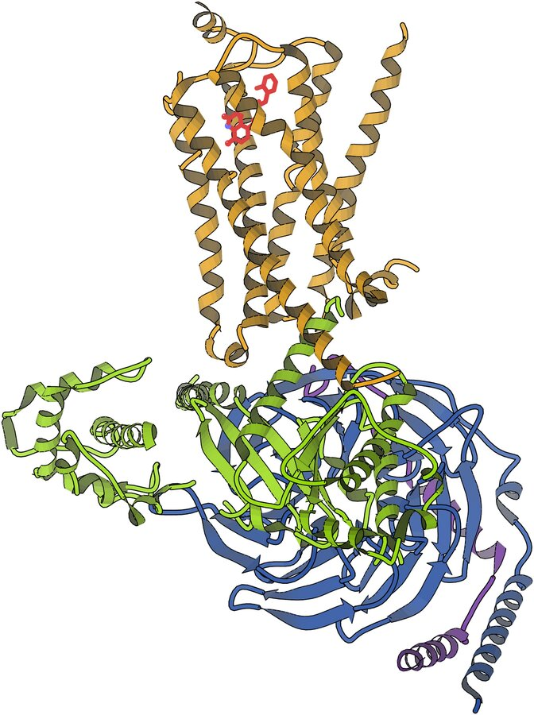
β₂-adrenergic receptor (gold) with its G protein (green, blue, purple). Crystal structure, PDB 3SN6 (Kobilka lab, 2011).
About a third of all approved drugs act on GPCRs: beta-blockers, opioids, antihistamines, antipsychotics, GLP-1 drugs for diabetes.
The drug developer’s vocabulary:
affinity (Kd, Ki): how tightly it binds;
efficacy: how strongly it switches the receptor on (agonist, partial agonist, antagonist);
potency (EC₅₀, IC₅₀): how much drug is needed;
selectivity: which receptors it hits, and which it misses.
You meet these words again in Kliniska prövningar och läkemedelsutveckling.
Why it matters: opioids, naloxone and beta-blockers
Morphine, fentanyl: full agonists at the μ-opioid receptor (a GPCR). They relieve pain, but in overdose they stop breathing.
Buprenorphine: a partial agonist with very high affinity. Its effect on breathing reaches a ceiling, so it is safer; used to treat opioid addiction. It also displaces full agonists.
Naloxone: a competitive antagonist. A nasal spray or injection pushes the opioid off the receptors and restarts breathing within minutes. It wears off faster than many opioids, so the patient must be watched.
Beta-blockers (metoprolol): competitive antagonists at the β₁-adrenergic receptor of the heart. They shift the curve for adrenaline to the right: lower heart rate and blood pressure.
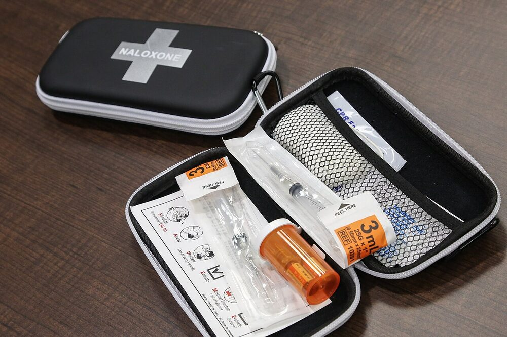
A naloxone kit handed out to the public (New Brunswick, Canada): naloxone, syringes and instructions.
Summary
Cells signal over long distances (endocrine), short distances (paracrine, autocrine, synaptic) or by contact. Water-soluble signals use cell-surface receptors (ion-channel-coupled, GPCR, enzyme-coupled); small fat-soluble signals use intracellular receptors that regulate genes.
Binding is an equilibrium: Kd is the concentration that fills half the receptors. A dose–response curve gives Emax (efficacy) and EC₅₀ (potency); IC₅₀ measures an inhibitor.
Agonists switch receptors on, partial agonists only part-way, antagonists block. Competitive antagonists shift the curve; non-competitive ones lower the maximum.
Signals are amplified by cascades of molecular switches (kinases and phosphatases, GTPases with GEFs and GAPs), integrated, shaped by feedback, and adapt when they stay on.
Changing existing proteins is fast (seconds); changing gene expression is slow (hours). Receptors are the targets of a large part of all drugs.
Read more (optional): Alberts et al., Molecular Biology of the Cell, 7th ed., ch. 15.